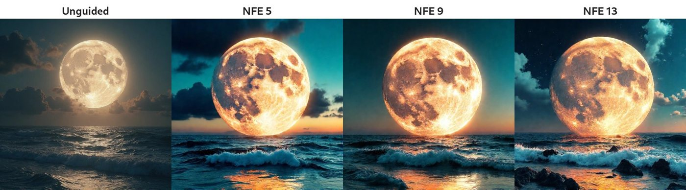

Inference-time guidance ICML 2026
How to Guide Your Flow: Few-Step Alignment via Flow Map Reward Guidance
Training-free reward guidance of a pre-trained flow map, cast as deterministic optimal control, in as few as three network evaluations.